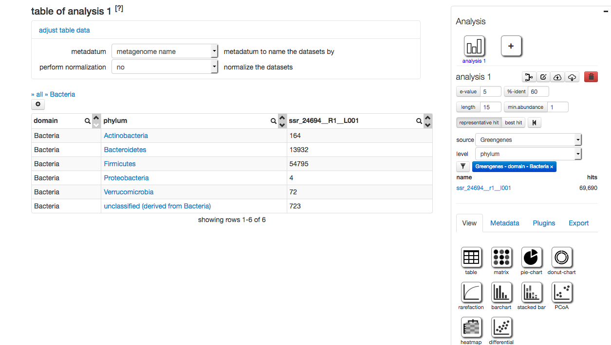
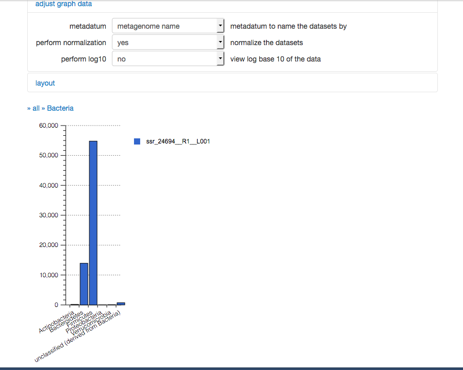
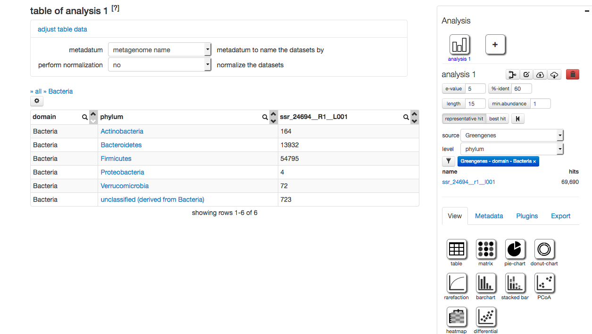
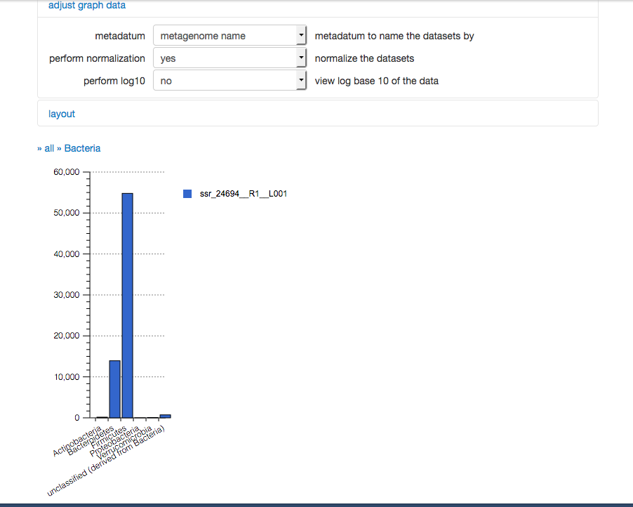

kombucha metagenomic analysis
https://play.google.com/store/books/details/O_Reilly_Media_Inc_BioCoder_8?id=FqwwCgAAQBAJIn [6]:
import os
PATH="/patrik_biome_data"
kombucha_datafiles = os.listdir("patrik_biome_data")
print("num data files:", len(kombucha_datafiles))
In [9]:
def onlyNucleotides(s):
diff_set = set(list("ATCG")).difference(set(list(s)))
if len(diff_set)==0:
return True
return False
def get_adapters(s):
"""
from string which starts with @, find the primers at the end
"""
return s[s.rfind(":")+1:len(s)]
def contains(s,kmer):
"""
returns position of s. Is this supposed to be 0 index?
"""
pos = []
for i in range(0,len(s)-len(kmer)):
if(s[i:i+len(kmer)]==kmer):
pos.append(i)
return pos
for processLine in open('patrik_biome_data/24694/ssr_24694__R1__L001.fastq'):
if(processLine[0]=="@"):
adapters = get_adapters(processLine)
print("adapters:",adapters)
elif(onlyNucleotides(processLine)):
print(processLine)
#test if begnining /end have adapters
#from inspection test for CTTGAG at end of string.
#this is not an adapter?
#from inspection test for CTGTG at beginning or 1 hamming dist away?
#every string begins w/CT; this cant be right. Or has GCCAGC in start, not at 0.
#GCCAGCAGC vs. GCCAGC. Longer is less probable.
In [ ]:
file = open("ssr_24694__R2__L001.fastq", 'r')
for x in range(0,5):
print(file.readline())
In [ ]:
file = open("ssr_24694__R1__L002.fastq", 'r')
for x in range(0,5):
print(file.readline())
In [ ]:
file = open("ssr_24694__R2__L002.fastq", 'r')
for x in range(0,5):
print(file.readline())
In [ ]:
#the format of the fastq file is colon delimited
1) illumina instrument: NS500457
2) run id: 68
3) flow cell id: H3YFWAFXX
4) flow cell lane: 1
5) x coordinate: 11101
6) y coordinate: 2470
7) unknown????
8) member of pair, 1 or 2?
9) N=nonfiltered , Y = filtered, we are nonfiltered
10) 0 if no contol bits are on else even number
12) index sequence. there are 2 here?
In [ ]:
The first step is to run fastqc on the fastq files using the command line or galaxy.
In [8]:
file = open("mutant_R1.fastq", 'r')
for x in range(0,5):
print(file.readline())
file = open("mutant_R2.fastq", 'r')
for x in range(0,5):
print(file.readline())
In [ ]:
#from the sequences figure out which ones start/end with adapters or some fraction of the adapters


 


